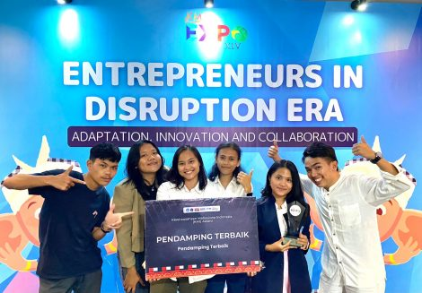
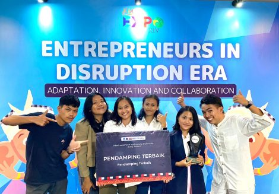

Pada Wisuda tahun ini terdapat sebanyak 398 wisudawan dan wisudawati yang terdiri dari 51 mahasiswa dari jurusan D3 Teknologi Informasi, 47 mahasiswa dari jurusan D3 Teknologi Komputer, 64 mahasiswa dari jurusan D4 Teknologi Rekayasa Perangkat Lunak, 66 mahasiswa dari jurusan S1 Informatika, 71 mahasiswa dari jurusan S1 Sistem Informasi, 35 mahasiswa dari jurusan S1 Teknik Elektro, 44 mahasiswa dari jurusan S1 Manajemen Rekayasa, dan 20 mahasiswa dari jurusan S1 Teknik Bioproses.


Sitoluama, 22 September 2023 Institut Teknologi Del menyelenggarakan Acara Pengukuhan Mahasiswa Baru Angkatan XXIII dan Dies Natalis ke XXII. Kegiatan ini dihadiri oleh Ketua Pembina Yayasan Del, Bapak Luhut Binsar Pandjaitan dan Ibu Devi Pandjaitan, Ketua Pengurus Yayasan Del, Ibu Intan Simanjuntak, Rektor IT Del Bapak Dr. Arnaldo Marulitua Sinaga, ST, M.InfoTech, Senat akademik Prof. Sebagai pembuka, Wakil Rektor Bidang Akademik dan Kemahasiswaan, Dr. Johannes Harungguan Sianipar, ST, MT mewakili panitia penerimaan mahasiswa baru melaporkan bahwa jumlah mahasiswa baru yang dikukuhkan sebanyak 483 mahasiswa, yang terdiri dari DIII Teknologi Infomasi 60 mahasiswa, DIII Teknologi Komputer 51 mahasiswa, Sarjana Terapan Teknologi Rekayasa Perangkat Lunak 98 mahasiswa, S1 Informatika 55 mahasiswa, S1 Sistem Informasi 51 mahasiswa, S1 Teknik Elektro 37 mahasiswa, S1 Manajemen Rekayasa 62 mahasiswa, dan S1 Teknik Bioproses 34 mahasiswa.


Pada tanggal 15-17 November 2023, Institut Teknologi Del ikut serta mengikuti kegiatan kompetisi KMI EXPO XIV 2023 yang diselenggarakan oleh Belmawa di Universitas Pendidikan Ganesha, Singaraja Bali. KMI EXPO merupakan suatu wadah bagi mahasiswa untuk memperkenalkan bidang usaha yang dapat meningkatkan perkembangan aktivitas kewirausahaan serta ajang kompetisi yang diikuti oleh kelompok usaha yang masuk pada KMI Award sebagai kategori produk utama yang akan dipamerkan pada ajang KMI EXPO XIV 2023. Kegiatan ini membuka peluang untuk membangun jejaring bisnis dengan investor, mentor dan mitra potensial yang dapat mendukung perkembangan bisnis mahasiswa di masa depan. Dengan mengikuti kegiatan ini mahasiswa termotivasi menjadi wirausahawan yang lebih tangguh, unggul, kreatif, inovatif, serta mampu bersaing baik secara lokal maupun global.
 
